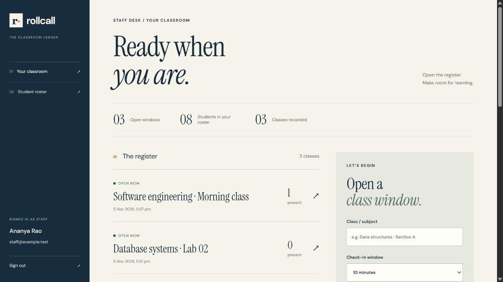

rollcall.
View on GitHub ↗Public preview. This page showcases Rollcall using sample data. Sign-in, attendance and saved records require the full server application.
A calmer way to take attendance
Make every
class count.
Rollcall gives teachers a clear place to manage a roster, open a register and keep track of attendance.
Run RollcallExplore the project ↗
01 / Open a register
Set a timed attendance window and share a short-lived check-in code with your class.
02 / Confirm attendance
Review the roster and confirm students in person, including with supported QR scanning.
03 / Keep the record
Review attendance and export a CSV for your records.